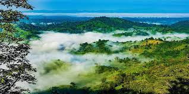

Sajek velley is one of the most popular tourist spots in Bagladesh situated among the hills of the kasalong range of mountains in Sajek union, Baghaichhari Upazila in Rangamati districk. the valley is 2000 feet(610m) above sea level. Sajek valley is known as the Queen of hils& Roof of Rangamati.
 home siam indes